Chapter 4 Regresión regularizada
Ejemplo
Consideremos dos métodos: regresión lineal y regresión polinomial (pensemos que es un tipo de ajuste de curvas). Para ilustrar los conceptos de sesgo y varianza simularemos varios posibles muestras de entrenamiento:
library(tidyverse)
theme_set(theme_bw())
cbbPalette <- c("#000000", "#E69F00", "#56B4E9", "#009E73", "#F0E442", "#0072B2", "#D55E00", "#CC79A7")f <- function(x){ sin(6*x)}
sim_data <- function(n = 15){
x <- runif(n, 0, 1)
y <- f(x) + rnorm(n, 0, 0.4)
data_frame(x = x, y = y)
}
dat <- sim_data(n = 100)
plot(dat$x,dat$y)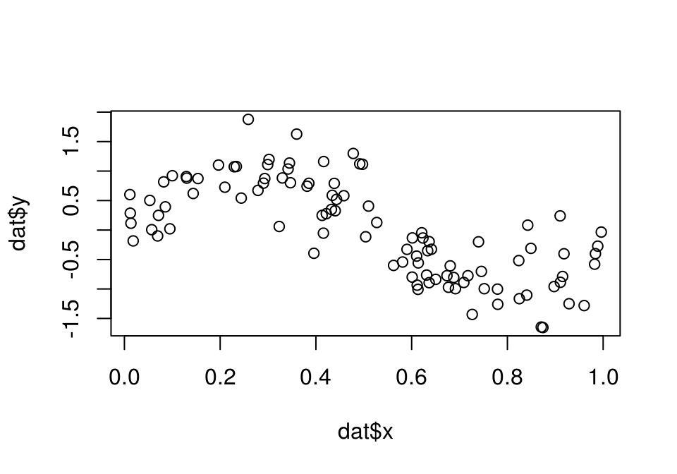
set.seed(92114)
sims <- data_frame(rep = 1:10)
sims <- sims %>% group_by(rep) %>%
mutate(data = list(data = sim_data())) %>% unnestRegresión lineal en \(x\) nos da diferencias consistentes entre predicciones y observaciones (es un método que sufre de sesgo):
ggplot(sims, aes(x=x, y=y)) + geom_point() +
facet_wrap(~rep) +
geom_smooth(formula = y~x, method ='lm', colour = 'red', se = FALSE) +
ylim(c(-3,3))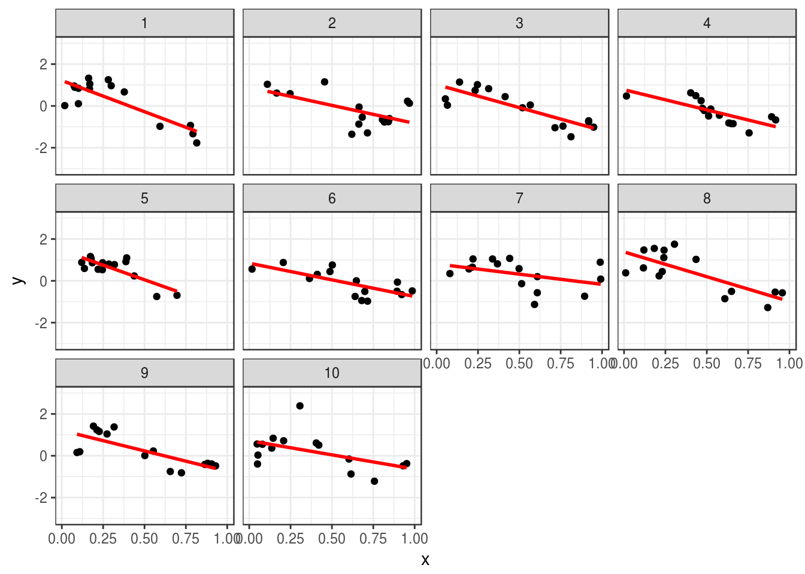
Mientras que regresión polinomial nos da diferencias variables y grandes entre predicciones y observaciones (es un método que sufre de varianza):
ggplot(sims, aes(x=x, y=y)) + geom_point() +
facet_wrap(~rep) + geom_smooth(formula = y~ poly(x, 5, raw = TRUE), method ='lm',
colour = 'red', se = FALSE) + ylim(c(-3,3))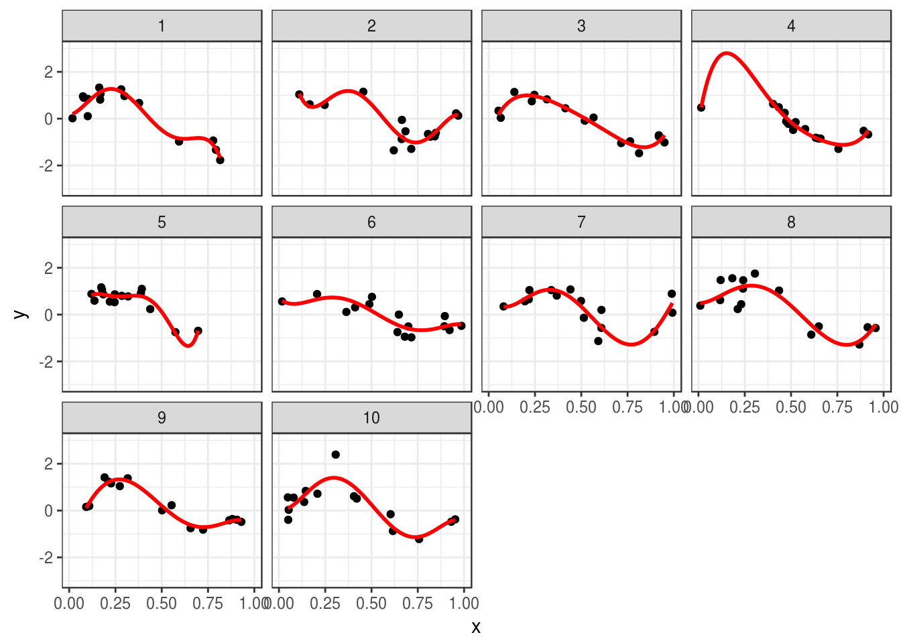
En este ejemplo, ambos métodos se desempeñan mal, pero por razones distintas:
- El primer método sufre (ajuste lineal) sufre de sesgo: es un método rígido que no aprende de patrones en los datos. Independientemente de los datos, tienen a sobreestimar o subestimar consistentemente la respuesta en algunos distintas regiones. No importa cuántos datos tenga, podremos observar este patrón de desempeño pobre. En términos de nuestra notación, si \(Y=f(X) + \epsilon\), el predictor \(\hat{f}\) está lejos de \(f\) porque \(\hat{f}\) no puede ajustarse a patrones verdaderos en los datos. Otra manera de decir esto es que el modelo no puede capturar señales claras en los datos.
Este fonómeno de sesgo alto también se denomina subajuste.
- El segundo método sufre de varianza: es un método demasiado flexible (para este problema) que aprende aspectos particulares de la muestra de datos que consideramos, en lugar de patrones sólidos de los datos. Su desempeño es malo porque lo que aprende no se repite en muestras futuras. En términos de nuestra notación, si \(Y=f(X) + \epsilon\), el predictor \(\hat{f}\) está lejos de \(f\) porque \(\hat{f}\) demasiado influida por valores de \(\epsilon\). Esto hace \(\hat{f}\) esté lejos de la verdadera \(f\). El modelo captura aspectos de ruido como si fueran señal.
Cada uno de estos problemas requiere soluciones diferentes.
Para tener mejor desempeño en la predicción, tenemos que balancear con cuidado el sesgo y la varianza de nuestros métodos. Generalmente cuando reducimos la varianza (usando métodos más rígidos), nos arriesgamos a sufrir más sesgo, y viceversa: cuando reducimos sesgo (usando métodos más flexibles), nos arriesgamos a sufrir por más varianza.
Otra manera de ver esto es que debemos encontrar la complejidad adecuada de nuestros modelos para capturar la señal en los datos de manera adecuada -sin ignorar señales claras pero no tomando ruidos como señal.4.0.1 Sesgo y varianza en modelos lineales
Aunque típicamente pensamos que los modelos lineales son métodos simples, con estructura rígida, y que tienden a sufrir más por sesgo que por varianza (parte de la razón por la que existen métodos más flexibles como bosques aleatorios, redes nueronales, etc.), hay varias razones por las que los métodos lineales pueden sufrir de varianza alta:
Cuando la muestra de entrenamiento es relativamente chica (\(N\) chica), la varianza puede ser alta.
Cuando el número de entradas \(p\) es grande, podemos también sufrir de varianza grande (pues tenemos muchos parámetros para estimar).
Cuando hay variables correlacionadas en las entradas la varianza también puede ser alta.
En estos casos, conviene buscar maneras de reducir varianza - generalmente a costa de un incremento de sesgo.
Ejemplo
Consideramos regresión logística. En primer lugar, supondremos que tenemos un problema con \(n=400\) y \(p=100\), y tomamos como modelo para los datos (sin ordenada al origen):
\[p_1(x)=h\left(\sum_{j=1}^{100} \beta_j x_j\right ),\]
donde \(h\) es la función logística. Nótese que este es el verdadero modelo para los datos. Para producir datos de entrenamiento, primero generamos las betas fijas, y después, utilizando estas betas, generamos 400 casos de entrenamiento.
Generamos las betas:
h <- function(x){ 1 / (1 + exp(-x))}
set.seed(2805)
beta <- rnorm(100,0,0.1)
names(beta) <- paste0('V', 1:length(beta))
head(beta, 5)## V1 V2 V3 V4 V5
## -0.11987553 0.03462759 -0.08181807 0.01492096 0.04016015Con esta función simulamos datos de entrenamiento (400) y datos de prueba (5000).
sim_datos <- function(n, m, beta){
p <- length(beta)
#n = casos de entrenamiento, m= casos de prueba, p=num variables
mat <- matrix(rnorm((n+m)*p, 0, 0.5), n+m, p) + rnorm(n + m)
prob <- h(mat %*% beta)
y <- rbinom(n + m, 1, prob)
dat <- as.data.frame(mat)
dat$y <- y
dat$entrena <- FALSE
dat$entrena[1:n] <- TRUE
dat
}
set.seed(9921)
datos <- sim_datos(n = 500, m = 2000, beta = beta)Y ahora ajustamos el modelo de regresión logística (no usamos ordenada al origen para simplificar):
mod_1 <- glm(y ~ -1 + ., datos %>% filter(entrena) %>% select(-entrena),
family = 'binomial')¿Qué tan buenas fueron nuestras estimaciones?
qplot(beta, mod_1$coefficients) +
xlab('Coeficientes') +
ylab('Coeficientes estimados') +
geom_abline(intercept=0, slope =1) +
xlim(c(-1.5,1.5))+ ylim(c(-1.5,1.5))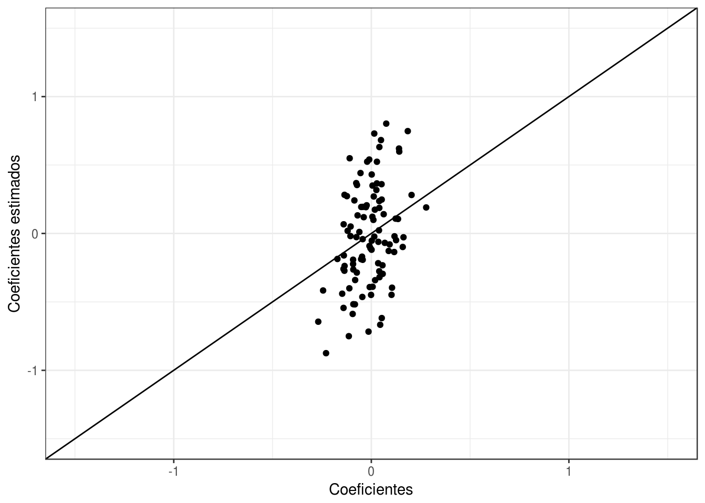
Y notamos que las estimaciones no son muy buenas, y tienen dispersión alta. Podemos hacer otra simulación para confirmar que el problema es que las estimaciones son muy variables.
Simulamos otra muestra de entrenamiento, y vemos cómo se comparan los coeficientes de las dos muestras:
datos_2 <- sim_datos(n = 500, m = 10, beta = beta)
mod_2 <- glm(y ~ -1 + ., datos_2 %>% filter(entrena) %>% select(-entrena),
family = 'binomial')
qplot(mod_1$coefficients, mod_2$coefficients) + xlab('Coeficientes mod 1') +
ylab('Coeficientes mod 2') +
geom_abline(intercept=0, slope =1) +
xlim(c(-1.5,1.5))+ ylim(c(-1.5,1.5))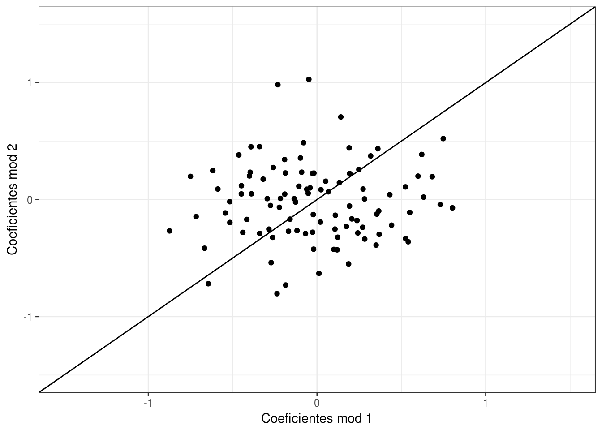
Si repetimos varias veces:
dat_sim <- lapply(1:20, function(i){
salida <- sim_datos(n=500, m=10, beta)
mod <- glm(y ~ -1 + ., salida %>% filter(entrena) %>% select(-entrena),
family = 'binomial')
data_frame(rep = i, vars = names(coef(mod)), coefs = coef(mod))
}) %>% bind_rows
head(dat_sim)## # A tibble: 6 x 3
## rep vars coefs
## <int> <chr> <dbl>
## 1 1 V1 -0.0527
## 2 1 V2 0.427
## 3 1 V3 -0.0772
## 4 1 V4 -0.249
## 5 1 V5 0.355
## 6 1 V6 0.514Vemos que hay mucha variabilidad en la estimación de los coeficientes (en rojo están los verdaderos):
dat_sim <- dat_sim %>% mutate(vars = reorder(vars, coefs, mean))
ggplot(dat_sim, aes(x=vars, y=coefs)) + geom_boxplot() +
geom_line(data=data_frame(coefs=beta, vars=names(beta)),
aes(y=beta, group=1), col='red',size=1.1) + coord_flip()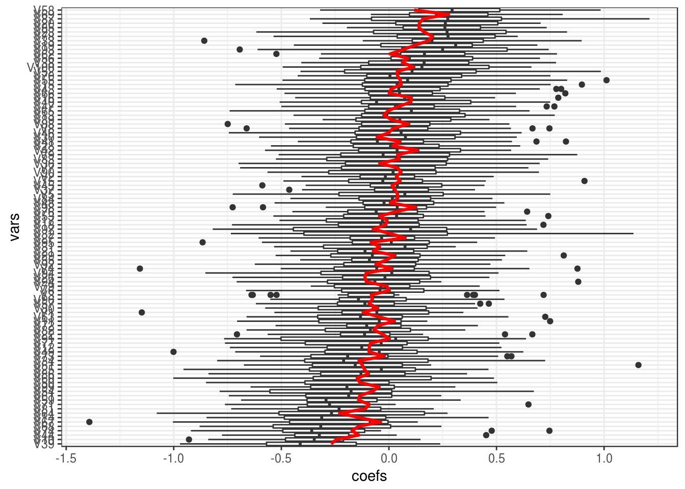
En la práctica, nosotros tenemos una sola muestra de entrenamiento. Así que, con una muestra de tamaño \(n=500\) como en este ejemplo, obtendremos típicamente resultados no muy buenos. Estos coeficientes ruidosos afectan nuestras predicciones de manera negativa.
Vemos ahora lo que pasa con nuestra \(\hat{p}_1(x)\) estimadas, comparándolas con \(p_1(x)\) (las probabilidades reales), para la primera simulación:
dat_e <- datos %>% filter(entrena)
dat_p <- datos %>% filter(!entrena)
x_e <- dat_e %>% select(-entrena, -y) %>% as.matrix
x_p <- dat_p %>% select(-entrena, -y) %>% as.matrix
p_entrena <- data_frame(prob_hat_1 = mod_1$fitted.values,
prob_1 = as.numeric(h(x_e %*% beta)),
clase = dat_e$y)
p_prueba <- data_frame(prob_hat_1 = h(x_p %*% (mod_1$coefficients))[,1],
prob_1 = h(x_p %*% beta)[,1],
clase = dat_p$y)Para los datos de entrenamiento:
ggplot(p_entrena, aes(x=prob_1, y=prob_hat_1, colour=factor(clase))) + geom_point()+ xlab("Probabilidades verdaderas") + ylab("Probabilidades estimadas")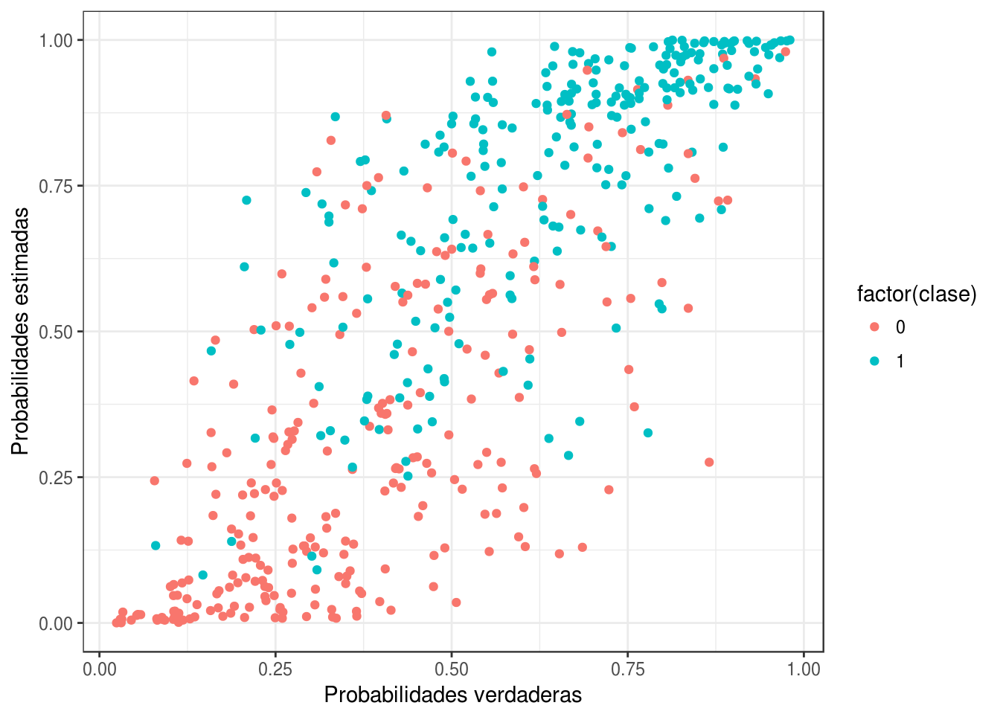
Y con la muestra de prueba:
ggplot(p_prueba, aes(x=prob_1, y=prob_hat_1, colour=factor(clase))) +
geom_point()+ xlab("Probabilidades verdaderas") + ylab("Probabilidades estimadas")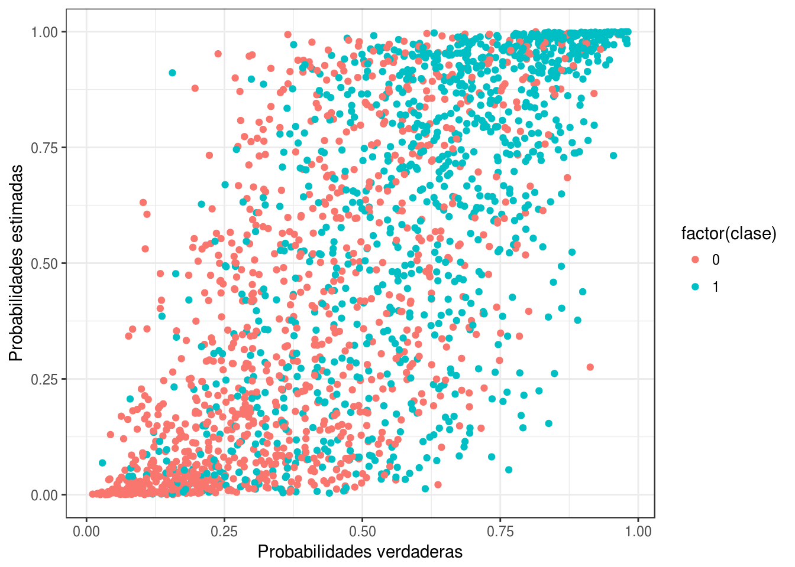
Si la estimación fuera perfecta, esta gráfica sería una diagonal. Vemos entonces que cometemos errores grandes. El problema no es que nuestro modelo no sea apropiado (logístico), pues ese es el modelo real. El problema es la variabilidad en la estimación de los coeficientes que notamos arriba.
La matriz de confusión de prueba está dada por (normalizando por columnas):
tab <- table(p_prueba$prob_hat_1 > 0.5, p_prueba$clase)
prop.table(tab, margin=2)##
## 0 1
## FALSE 0.6587302 0.3467742
## TRUE 0.3412698 0.6532258Así que para los ejemplos de tipo 1 tenemos un error de alrededor de 34%, y para los de tipo 0 un error cerca de 34%. La tasa de clasificación incorrecta en la muestra de prueba es:
mean((p_prueba$prob_hat_1 > 0.5) != (p_prueba$clase == 1))## [1] 0.344Veremos ahora que podemos mejorar este modelo controlando la varianza que coeficientes que acabamos de observar.
4.0.2 Reduciendo varianza de los coeficientes
Como el problema es la varianza, podemos atacar este problema poniendo restricciones a los coeficientes, de manera que caigan en rangos más aceptables. Una manera de hacer esto es sustituir el problema de minimización de regresión logística, que es minimizar la devianza:
\[\min_{\beta} D(\beta)\]
con un problema penalizado
\[\min_{\beta} D(\beta) + \lambda\sum_{i=1}^p \beta_j^2\]
escogiendo un valor apropiado de \(\lambda\). También es posible poner restricciones sobre el tamaño de \(\sum_{i=1}^p \beta_j^2\), lo cual es equivalente al problema de penalización.
En este caso obtenemos (veremos más del paquete glmnet):
library(glmnet)
mod_restringido <- glmnet(x = x_e, y = dat_e$y,
alpha = 0,
family='binomial', intercept = FALSE,
lambda = 0.1)
beta_penalizado <- coef(mod_restringido)[-1] # quitar interceptY podemos ver que el tamaño de los coeficientes se redujo considerablemente:
sum(beta_penalizado^2)## [1] 0.3185858sum(coef(mod_1)^2)## [1] 13.62839Los nuevos coeficientes estimados:
qplot(beta, beta_penalizado) +
xlab('Coeficientes') +
ylab('Coeficientes estimados') +
geom_abline(intercept=0, slope =1) +
xlim(c(-0.5,0.5))+ ylim(c(-0.5,0.5))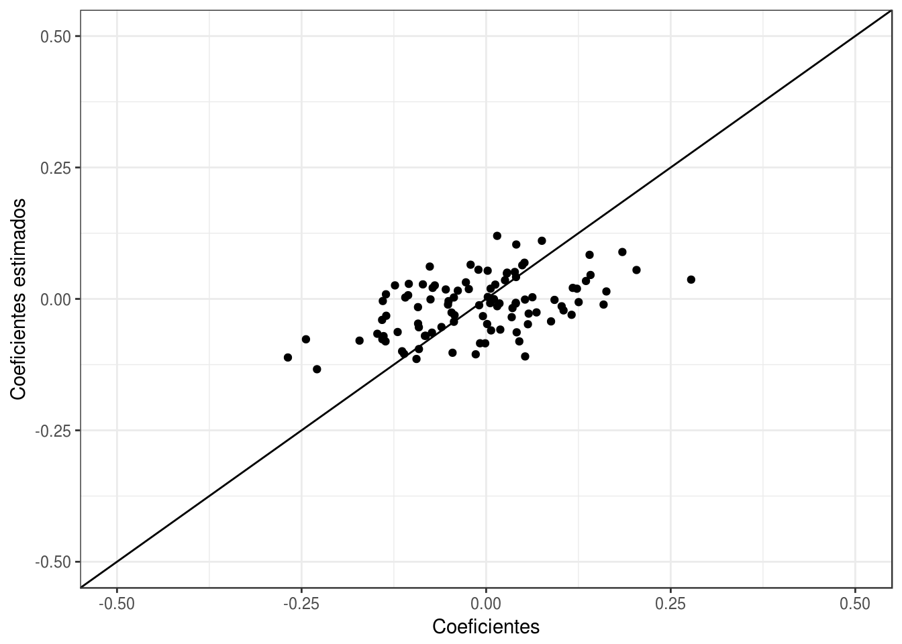
p_entrena$prob_hat_pen <- h(x_e %*% as.numeric(beta_penalizado))
p_prueba$prob_hat_pen <- h(x_p %*% as.numeric(beta_penalizado))Para los datos de entrenamiento:
ggplot(p_entrena, aes(x=prob_1, y=prob_hat_pen, colour=factor(clase))) + geom_point()
Y con la muestra de prueba:
ggplot(p_prueba, aes(x=prob_1, y=prob_hat_pen, colour=factor(clase))) + geom_point()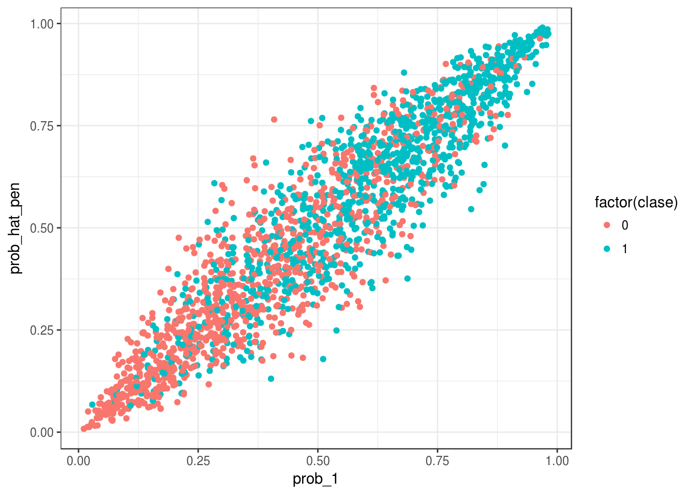
La matriz de confusión es ahora:
tab <- table(p_prueba$prob_hat_pen > 0.5, p_prueba$clase)
prop.table(tab, margin=2)##
## 0 1
## FALSE 0.6994048 0.3094758
## TRUE 0.3005952 0.6905242Y vemos que logramos reducir considerablemente el error de clasificación de prueba.
Sin embargo, vemos que en la muestra de entrenamiento se desempeña mejor el modelo sin penalización, como es de esperarse (¿Por qué?). Si ingenuamente escogemos nuestro modelo según el error de entrenamiento, empeoraríamos nuestro desempeño para muestras futuras:
error_entrena <- mean((p_entrena$prob_hat_1 > 0.5) != (p_entrena$clase==1))
error_entrena_penalizado <- mean((p_entrena$prob_hat_pen > 0.5) != (p_entrena$clase==1))
error_entrena## [1] 0.21error_entrena_penalizado## [1] 0.2464.1 Regularización ridge
Arriba vimos un ejemplo de regresión penalizada tipo ridge. Recordemos que para regresión lineal, buscábamos minimizar la cantidad \[D(\beta)=\frac{1}{n}\sum_{i=1}^n (y_i -\beta_0 - \sum_{j=1}^p \beta_j x_{ij})^2\] y en regresión logística, \[D(\beta)=-\frac{2}{n}\sum_{i=1}^n y_i \log p_{\beta}(x^{(i)}) + (1-y_i) \log(1 - p_{\beta}(x^{(i)})).\]
Observaciones
- La idea de regresión penalizada consiste en estabilizar la estimación de los coeficientes, especialmente en casos donde tenemos muchas variables en relación a los casos de entrenamiento. La penalización no permite que varíen tan fuertemente los coeficientes.
- Cuando \(\lambda\) es mas grande, los coeficientes se encogen más fuertemente hacia cero con respecto al problema no regularizado. En este caso, estamos reduciendo la varianza pero potencialmente incrementando el sesgo.
- Cuando \(\lambda\) es mas chico, los coeficientes se encogen menos fuertemente hacia cero, y quedan más cercanos a los coeficientes de mínimos cuadrados/máxima verosimilitud. En este caso, estamos reduciendo el sesgo pero incrementando la varianza.
- Nótese que no penalizamos \(\beta_0\). Es posible hacerlo, pero típicamente no lo hacemos. En regresión lineal, de esta forma garantizamos que la predicción \(\hat{y}\), cuando todas las variables \(x_j\) toman su valor en la media, es el promedio de las \(y_i\)’s de entrenamiento. Igualmente en regresión logística, la probabilidad ajustada cuando las entradas toman su valor en la media es igual a \(h(\beta_0)\).
- Que las variables estén estandarizadas es importante para que tenga sentido la penalización. Si las variables \(x_j\) están en distintas escalas (por ejemplo pesos y dólares), entonces también los coeficientes \(\beta_j\) están en distintas escalas, y una penalización fija no afecta de la misma forma a cada coeficiente.
Resolver este problema por descenso en gradiente no tienen dificultad, pues:
De forma que sólo hay que hacer una modificación mínima al algoritmo de descenso en gradiente para el caso no regularizado.
4.1.1 Selección de coeficiente de regularización
Seleccionamos \(\lambda\) para minimizar el error de predicción, es decir, para mejorar nuestro modelo ajustado en cuanto a sus predicciones.
No tiene sentido intentar escoger \(\lambda>0\) usando el error de entrenamiento. La razón es que siempre que aumentamos \(\lambda\), obtenemos un valor mayor de la suma de cuadrados / devianza del modelo, pues \(\lambda\) más grande implica que pesa menos la minimización de la suma de cuadrados /devianza en el problema de la minimización. En otras palabras, los coeficientes tienen una penalización más fuerte, de modo que el mínimo que se alcanza es mayor en términos de devianza.
Intentamos escoger \(\lambda\) de forma que se minimice el error de predicción, o el error de prueba (que estima el error de predicción).
Ejemplo (simulación)
Regresamos a nuestro problema original simulado de clasificación. La función glmnet se encarga de estandarizar variables y escoger un rango adecuado de penalizaciones \(\lambda\). La función glmnet ajusta varios modelos (parámetro nlambda) para un rango amplio de penalizaciones \(\lambda\).
En lo que sigue, agregamos el intercept (ordenada al origen), como normalmente hacemos:
library(glmnet)
mod_ridge <- glmnet(x = x_e, y = dat_e$y,
alpha = 0, #ridge
family='binomial',
nlambda=50)
dim(coef(mod_ridge))## [1] 101 50En primer lugar, observamos cómo se encogen los coeficientes para distintos valores de \(\lambda\):
plot(mod_ridge, xvar='lambda')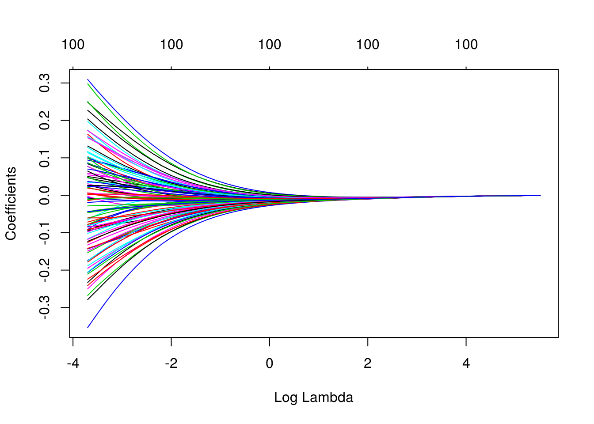
Para escoger el valor adecuado de \(\lambda\), calculamos la devianza bajo la muestra de prueba:
devianza <- function(p, y){
-2*mean(y * log(p) + (1-y) * log(1 - p))
}
# predict en glmnet produce probabilidades para los 50 modelos
preds_ridge <- predict(mod_ridge, newx = x_p, type = 'response') %>%
data.frame %>% mutate(id = 1:nrow(x_p)) %>%
gather(modelo, prob, -id) %>%
left_join(dat_p %>% mutate(id=1:nrow(dat_p)) %>% select(id, y))## Joining, by = "id"head(preds_ridge)## id modelo prob y
## 1 1 s0 0.484 0
## 2 2 s0 0.484 0
## 3 3 s0 0.484 0
## 4 4 s0 0.484 1
## 5 5 s0 0.484 0
## 6 6 s0 0.484 0tail(preds_ridge)## id modelo prob y
## 99995 1995 s49 0.60302538 1
## 99996 1996 s49 0.85778751 1
## 99997 1997 s49 0.22064914 0
## 99998 1998 s49 0.70152154 1
## 99999 1999 s49 0.62870419 0
## 100000 2000 s49 0.07961955 0df_lambdas <- data_frame(modelo = attr(mod_ridge$a0, 'names'),
lambda = mod_ridge$lambda)
devianzas_prueba <- preds_ridge %>% group_by(modelo) %>%
summarise( devianza = devianza(prob, y)) %>% left_join(df_lambdas)## Joining, by = "modelo"ggplot(devianzas_prueba, aes(x = lambda, y= devianza)) +
scale_x_log10(breaks = round(2^seq(-5,5,1),2)) +
geom_point()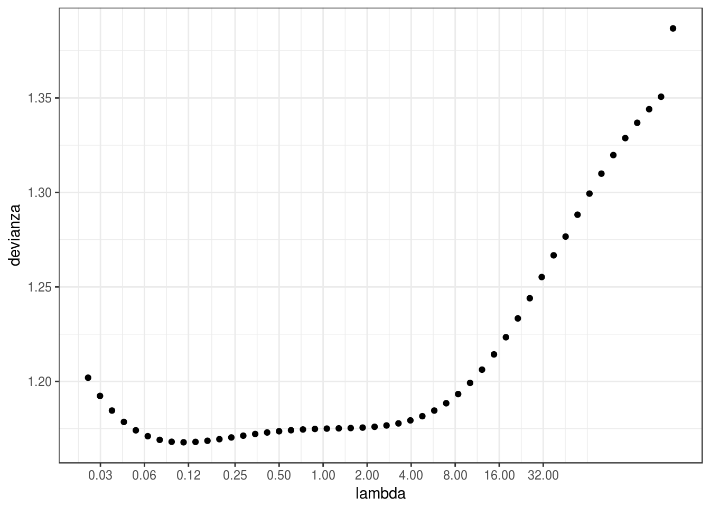
Buscamos entonces minimizar la devianza (evaluada en la muestra de prueba), que corresponde a tomar un valor de \(\lambda\) alrededor de exp(-2).
Discusión: ¿por qué la devianza de prueba tiene esta forma, que es típica para problemas de regularización?
El modelo final queda como sigue:
df_lambdas ## # A tibble: 50 x 2
## modelo lambda
## <chr> <dbl>
## 1 s0 247.
## 2 s1 205.
## 3 s2 170.
## 4 s3 141.
## 5 s4 116.
## 6 s5 96.5
## 7 s6 80.0
## 8 s7 66.3
## 9 s8 54.9
## 10 s9 45.5
## # ... with 40 more rowscoefs_selec <- coef(mod_ridge)[ , 's40']
pred_prueba_final <- h(cbind(1, x_p) %*% coefs_selec)
tab_confusion <- table(pred_prueba_final > 0.5, dat_p$y)
tab_confusion##
## 0 1
## FALSE 746 344
## TRUE 262 648prop.table(tab_confusion, margin=2)##
## 0 1
## FALSE 0.7400794 0.3467742
## TRUE 0.2599206 0.6532258Ejemplo: variables correlacionadas
Ridge es efectivo para reducir varianza inducida por variables correlacionadas.
library(readr)
dat_grasa <- read_csv(file = 'datos/bodyfat.csv')
head(dat_grasa)## # A tibble: 6 x 14
## grasacorp edad peso estatura cuello pecho abdomen cadera muslo rodilla
## <dbl> <int> <dbl> <dbl> <dbl> <dbl> <dbl> <dbl> <dbl> <dbl>
## 1 12.3 23 154. 67.8 36.2 93.1 85.2 94.5 59 37.3
## 2 6.1 22 173. 72.2 38.5 93.6 83 98.7 58.7 37.3
## 3 25.3 22 154 66.2 34 95.8 87.9 99.2 59.6 38.9
## 4 10.4 26 185. 72.2 37.4 102. 86.4 101. 60.1 37.3
## 5 28.7 24 184. 71.2 34.4 97.3 100 102. 63.2 42.2
## 6 20.9 24 210. 74.8 39 104. 94.4 108. 66 42
## # ... with 4 more variables: tobillo <dbl>, biceps <dbl>, antebrazo <dbl>,
## # muñeca <dbl>nrow(dat_grasa)## [1] 252set.seed(127)
dat_grasa$unif <- runif(nrow(dat_grasa), 0, 1)
dat_grasa <- arrange(dat_grasa, unif)
dat_grasa$id <- 1:nrow(dat_grasa)
bfat_e <- dat_grasa[1:100,]
bfat_p <- dat_grasa[101:252,]xbf_e <- bfat_e %>% select(estatura, peso, abdomen, muslo, biceps) %>% as.matrix
cor(xbf_e)## estatura peso abdomen muslo biceps
## estatura 1.00000000 0.2534694 0.0928379 0.04835578 0.1857616
## peso 0.25346939 1.0000000 0.9059227 0.86412005 0.8273691
## abdomen 0.09283790 0.9059227 1.0000000 0.78986726 0.7308348
## muslo 0.04835578 0.8641200 0.7898673 1.00000000 0.7899550
## biceps 0.18576161 0.8273691 0.7308348 0.78995504 1.0000000ridge_bodyfat <- glmnet(x = xbf_e, y = bfat_e$grasacorp, alpha=0,
lambda = exp(seq(-2, 7, 0.25)))
plot(ridge_bodyfat, xvar = 'lambda', label=TRUE)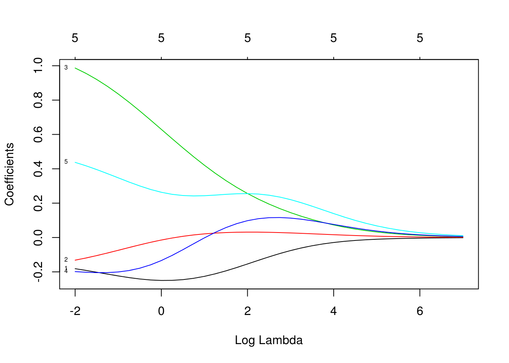
coef(ridge_bodyfat)[, 37]## (Intercept) estatura peso abdomen muslo biceps
## -38.3881059 -0.1814424 -0.1318539 0.9867113 -0.1983769 0.4374818coef(ridge_bodyfat)[, 15]## (Intercept) estatura peso abdomen muslo biceps
## -2.84440852 -0.04789201 0.02175931 0.10472079 0.09757134 0.18222422Donde notamos que las variables con correlaciones altas se “encogen” juntas hacia valores similares conforme aumentamos la constante de penalización \(\lambda\).
Nótese que para regularización muy baja, peso y abdomen por ejemplo, tienen signos opuestos y valores altos: esto es posible pues tienen correlación alta, de modo que la función de predicción está pobremente determinada: hay un espacio grande de pares de parámetros que dan predicciones similares, y esto resulta en coeficientes con varianza alta y predicciones inestables y ruidosas.
Nótese, adicionalmente, que los coeficientes parecen tener más sentido en relación al problema con regularización. Regularización, en este tipo de problemas, es una de las componentes necesarias (pero no suficiente) para ir hacia interpretación del fenómeno que nos interesa.
4.2 Entrenamiento, Validación y Prueba
El enfoque que vimos arriba, en donde dividemos la muestra en dos partes al azar, es la manera más fácil de seleccionar modelos. En general, el proceso es el siguiente:
- Una parte con los que ajustamos todos los modelos que nos interesa. Esta es la muestra de entrenamiento
- Una parte como muestra de prueba, con el que evaluamos el desempeño de cada modelo ajustado en la parte anterior. En este contexto, a esta muestra se le llama muestra de validación}.
- Posiblemente una muestra adicional independiente, que llamamos muestra de prueba, con la que hacemos una evaluación final del modelo seleccionado arriba. Es una buena idea apartar esta muestra si el proceso de validación incluye muchos métodos con varios parámetros afinados (como la \(\lambda\) de regresión ridge).
knitr::include_graphics("./imagenes/div_muestra.png")
Cuando tenemos datos abundantes, este enfoque es el usual. Por ejemplo, podemos dividir la muestra en 50-25-25 por ciento. Ajustamos modelos con el primer 50%, evaluamos y seleccionamos con el segundo 25% y finalmente, si es necesario, evaluamos el modelo final seleccionado con la muestra final de 25%.
La razón de este proceso es que así podemos ir y venir entre entrenamiento y validación, buscando mejores enfoques y modelos, y no ponemos en riesgo la estimación final del error. (Pregunta: ¿por qué probar agresivamente buscando mejorar el error de validación podría ponder en riesgo la estimación final del error del modelo seleccionado? )
4.2.1 Validación cruzada
En muchos casos, no queremos apartar una muestra de validación para seleccionar modelos, pues no tenemos muchos datos (al dividir la muestra obtendríamos un modelo relativamente malo en relación al que resulta de todos los datos). Un criterio para seleccionar la regularización adecuada es el de **validación cruzada*, que es un método computacional para producir una estimación interna (usando sólo muestra de entrenamiento) del error de predicción.
En validación cruzada (con \(k\) vueltas), construimos al azar una partición, con tamaños similares, de la muestra de entrenamiento \({\mathcal L}=\{ (x_i,y_i)\}_{i=1}^n\):
\[ {\mathcal L}={\mathcal L}_1\cup {\mathcal L}_2\cup\cdots\cup {\mathcal L}_k.\]
knitr::include_graphics("./imagenes/div_muestra_cv.png")
Construimos \(k\) modelos distintos, digamos \(\hat{f}_j\), usando solamente la muestra \({\mathcal L}-{\mathcal L}_j\). Este modelo lo evaluamos usando la parte que no usamos, \({\mathcal L}_j\), para obtener una estimación honesta del error del modelo \(\hat{f}_k\), a la que denotamos por \(\hat{e}_j\).
Notemos entonces que tenemos \(k\) estimaciones del error \(\hat{e}_1,\ldots, \hat{e}_k\), una para cada uno de los modelos que construimos. La idea ahora es que
- Cada uno de los modelos \(\hat{f}_j\) es similar al modelo ajustado con toda la muestra \(\hat{f}\), de forma que podemos pensar que cada una de las estimaciones \(\hat{e}_j\) es un estimador del error de \(\hat{f}\).
- Dado el punto anterior, podemos construir una mejor estimación promediando las \(k\) estimaciones anteriores, para obtener: \[\widehat{cv} = \frac{1}{k} \sum_{j=1}^k \hat{e}_j.\]
- ¿Cómo escoger \(k\)? Usualmente se usan \(k=5,10,20\), y \(k=10\) es el más popular. La razón es que cuando \(k\) es muy chico, tendemos a evaluar modelos construidos con pocos datos (comparado al modelo con todos los datos de entrenamiento). Por otra parte, cuando \(k\) es grande el método puede ser muy costoso (por ejemplo, si \(k=N\), hay que entrenar un modelo para cada dato de entrada).
Por ejemplo, el paquete glmnet incluye la función cv.glmnet, que hace los \(k\) ajustes para cada una de las lambdas:
library(glmnet)
set.seed(291)
cv_mod_ridge <- cv.glmnet(x = x_e, y=dat_e$y,
alpha = 0,
family='binomial', intercept = F, nfolds = 10, nlambda=50)
plot(cv_mod_ridge)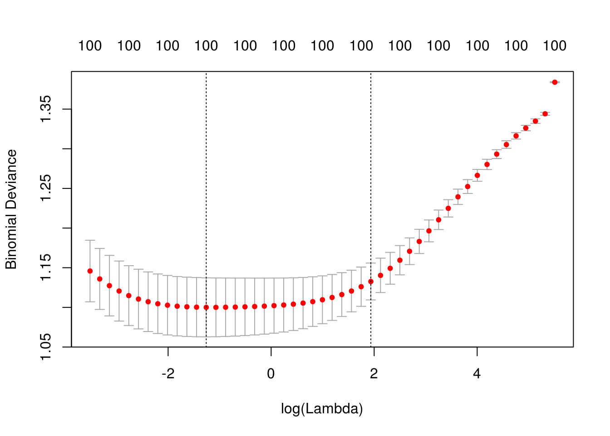
cv_mod_ridge$lambda.min## [1] 0.2837257cv_mod_ridge$lambda.1se## [1] 6.928732Nótese que la estimación del error de predicción por validación cruzada incluye un error de estimación (intervalos). Esto nos da dos opciones para escoger la lambda final:
- Escoger la que de el mínimo valor de error por validación cruzada
- Escoger la lambda más grande que no esté a más de 1 error estándar del mínimo.
En la gráfica anterior se muestran las dos posibilidades. La razón del segundo criterio es tomar el modelo más simple que tenga error consistente con el mejor modelo.
¿Cómo se desempeña validación cruzada como estimación del error?
cross_valid <- data_frame(devianza_cv = cv_mod_ridge$cvm,
modelo = attr(cv_mod_ridge$glmnet.fit$a0, 'names')[1:49])
devs <- devianzas_prueba %>% left_join(cross_valid) %>%
rename(devianza_prueba = devianza) %>%
gather(tipo, devianza, devianza_prueba, devianza_cv)## Joining, by = "modelo"ggplot(devs, aes(x=log(lambda), y=devianza, colour=tipo)) +
geom_point()## Warning: Removed 1 rows containing missing values (geom_point).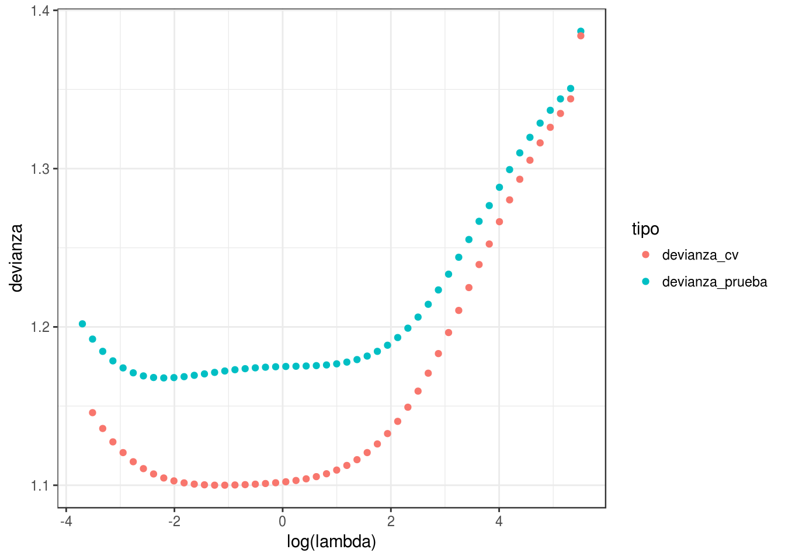
Vemos que la estimación en algunos casos no es tan buena, aún cuando todos los datos fueron usados. Pero el mínimo se encuentra en lugares muy similares.
La razón es que validación cruzada en realidad considera perturbaciones del conjunto de entrenamiento, de forma que lo que intenta evaluar el error producido, para cada lambda, sobre distintas muestras de entrenamiento.
En realidad nosotros queremos evaluar el error de predicción del modelo que ajustamos. Validación cruzada es más un estimador del error esperado de predicción sobre los modelos que ajustaríamos con distintas muestras de entrenamiento.
El resultado es que:
- Usamos validación cruzada para escoger la complejidad adecuada de la familia de modelos que consideramos.
- Como estimación del error de predicción del modelo que ajustamos, validación cruzada es más seguro que usar el error de entrenamiento, que muchas veces puede estar fuertemente sesgado hacia abajo. Sin embargo, lo mejor en este caso es utilizar una muestra de prueba.
Ejercicio
Consideremos el ejemplo de reconocimiento de dígitos.
library(readr)
digitos_entrena <- read_csv('datos/zip-train.csv')
digitos_prueba <- read_csv('datos/zip-test.csv')
names(digitos_entrena)[1] <- 'digito'
names(digitos_entrena)[2:257] <- paste0('pixel_', 1:256)
names(digitos_prueba)[1] <- 'digito'
names(digitos_prueba)[2:257] <- paste0('pixel_', 1:256)set.seed(2912)
digitos_entrena_s <- sample_n(digitos_entrena, size = 1000)
x_e <- digitos_entrena_s %>% select(-digito) %>% as.matrix
x_p <- digitos_prueba %>% select(-digito) %>% as.matrix
digitos_cv <- cv.glmnet(x = x_e, y = factor(digitos_entrena_s$digito),
family = 'multinomial', alpha = 0,
parallel = FALSE, nfolds = 5, lambda = exp(seq(-12, 2, 1)))
plot(digitos_cv)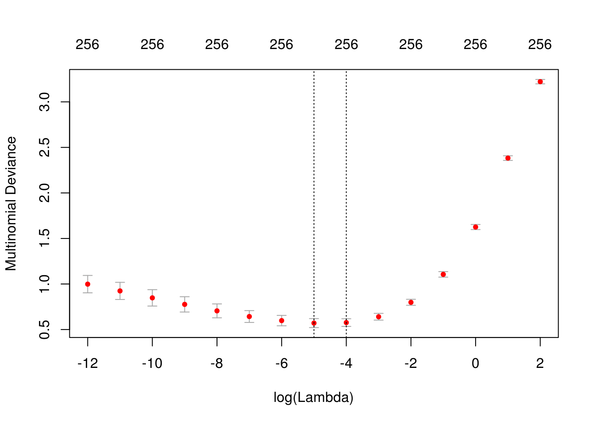
preds_prueba <- predict(digitos_cv, newx = x_p, s = 'lambda.min')[,,1] # solo un grupo de coeficientes
dim(preds_prueba)## [1] 2007 10preds_clase <- apply(preds_prueba, 1, which.max)
table(preds_clase, digitos_prueba$digito)##
## preds_clase 0 1 2 3 4 5 6 7 8 9
## 1 348 0 5 3 3 12 7 1 7 0
## 2 0 253 0 0 2 0 0 1 1 3
## 3 3 0 164 3 5 1 3 0 8 1
## 4 2 3 5 142 0 17 0 2 11 0
## 5 3 3 7 1 165 2 2 7 4 5
## 6 0 0 0 10 0 112 5 1 3 1
## 7 1 3 8 0 6 1 150 0 0 0
## 8 0 0 3 1 1 0 0 130 1 2
## 9 1 1 6 4 7 11 3 0 129 1
## 10 1 1 0 2 11 4 0 5 2 164mean(preds_clase -1 != digitos_prueba$digito)## [1] 0.124564Este modelo mejora considerablemente al modelo sin regularización.
Observación: Cuando vimos regresión multinomial, la última clase es uno menos la suma del resto de probabilidades de clase (\((K-1)(p+1)\) parámetros). La salida de glmnet, sin embargo, tiene coeficientes para todas las clases (\(K(p+1)\) parámetros). ¿Por qué en regresión ridge no está sobreparametrizado el modelo?
4.3 Regularización lasso
Otra forma de regularización es el lasso, que en lugar de penalizar con la suma de cuadrados en los coeficientes, penaliza por la suma de su valor absoluto.
El problema de minimización de ridge y de lasso se pueden reescribir como problemas de restricción:
\(s\) y \(t\) chicas corresponden a valores de penalización \(\lambda\) grandes.
En un principio, puede parecer que ridge y lasso deben dar resultados muy similares, pues en ambos casos penalizamos por el tamaño de los coeficientes. Sin embargo, son distintos de una manera muy importante.
En la siguiente gráfica regresentamos las curvas de nivel de \(D(\beta)\). Recordemos que en mínimos cuadrados o regresión logística intentamos minimizar esta cantidad sin restricciones, y este mínimo se encuentra en el centro de estas curvas de nivel. Para el problema restringido, buscamos más bien la curva de nivel más baja que intersecta la restricción:
knitr::include_graphics('./imagenes/ridge_lasso.png') Y obsérvese ahora que la solución de lasso puede hacer algunos coeficientes
igual a 0. Es decir,
Y obsérvese ahora que la solución de lasso puede hacer algunos coeficientes
igual a 0. Es decir,
En regresión ridge, los coeficientes se encogen gradualmente desde la solución no restringida hasta el origen. Ridge es un método de encogimiento de coeficientes.
En regresión lasso, los coeficientes se encogen gradualmente, pero también se excluyen variables del modelo. Por eso lasso es un método de encogimiento y selección de variables.- Regresión ridge es especialmente útil cuando tenemos varias variables de entrada fuertemente correlacionadas. Regresión ridge intenta encoger juntos coeficientes de variables correlacionadas para reducir varianza en las predicciones.
- Lasso encoge igualmente coeficientes para reducir varianza, pero también comparte similitudes con regresión de mejor subconjunto, en donde para cada número de variables \(l\) buscamos escoger las \(l\) variables que den el mejor modelo. Sin embargo, el enfoque de lasso es más escalable y puede calcularse de manera más simple.
- Descenso en gradiente no es apropiado para regresión lasso (ver documentación de glmnet para ver cómo se hace en este paquete). El problema es que los coeficientes nunca se hacen exactamente cero, pues la restricción no es diferenciable en el origen (coeficientes igual a cero).
Ejemplo
Consideramos el ejemplo de bodyfat:
library(readr)
dat_grasa <- read_csv(file = 'datos/bodyfat.csv')
head(dat_grasa)## # A tibble: 6 x 14
## grasacorp edad peso estatura cuello pecho abdomen cadera muslo rodilla
## <dbl> <int> <dbl> <dbl> <dbl> <dbl> <dbl> <dbl> <dbl> <dbl>
## 1 12.3 23 154. 67.8 36.2 93.1 85.2 94.5 59 37.3
## 2 6.1 22 173. 72.2 38.5 93.6 83 98.7 58.7 37.3
## 3 25.3 22 154 66.2 34 95.8 87.9 99.2 59.6 38.9
## 4 10.4 26 185. 72.2 37.4 102. 86.4 101. 60.1 37.3
## 5 28.7 24 184. 71.2 34.4 97.3 100 102. 63.2 42.2
## 6 20.9 24 210. 74.8 39 104. 94.4 108. 66 42
## # ... with 4 more variables: tobillo <dbl>, biceps <dbl>, antebrazo <dbl>,
## # muñeca <dbl>nrow(dat_grasa)## [1] 252set.seed(127)
dat_grasa$unif <- runif(nrow(dat_grasa), 0, 1)
dat_grasa <- arrange(dat_grasa, unif)
dat_grasa$id <- 1:nrow(dat_grasa)
dat_e <- dat_grasa[1:150,]
dat_p <- dat_grasa[151:252,]x_e <- dat_e %>% select(-grasacorp, -id, -unif) %>% as.matrix
x_p <- dat_p %>% select(-grasacorp, -id, -unif) %>% as.matrix
mod_bodyfat <- cv.glmnet(x = x_e, y = dat_e$grasacorp, alpha = 1) #alpha=1 para lasso
plot(mod_bodyfat)
coeficientes <- predict(mod_bodyfat, s ='lambda.1se', type='coefficients')
coeficientes## 14 x 1 sparse Matrix of class "dgCMatrix"
## 1
## (Intercept) -20.75924245
## edad 0.05179279
## peso .
## estatura -0.09936002
## cuello .
## pecho .
## abdomen 0.58019360
## cadera .
## muslo .
## rodilla .
## tobillo .
## biceps .
## antebrazo .
## muñeca -0.51756816pred_prueba <- predict(mod_bodyfat, newx = x_p, s ='lambda.1se')
sqrt(mean((pred_prueba-dat_p$grasacorp)^2))## [1] 4.374339Comparado con regresión lineal:
pred_prueba <- predict(lm(grasacorp ~., data = dat_e %>% select(-id, -unif)), newdata=dat_p)
sqrt(mean((pred_prueba-dat_p$grasacorp)^2))## [1] 4.311924